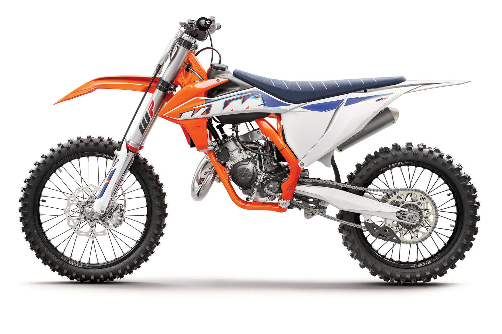

All it takes is one hard, fast rip into a loamy berm to know that the KTM 125 SX is a serious contender in the 125 cc race. Not only has the 'Ring-ting-ting' been given a fuel-injected revival, but the entire motorcycle also benefits from class-leading developments at every end. Boasting accolades such as being the leader in 2-stroke motocross innovation in the modern era, the KTM 125 SX simply slays the rest of the 125 cc class. All you need do is prod the starter, blip the throttle and let rip.
